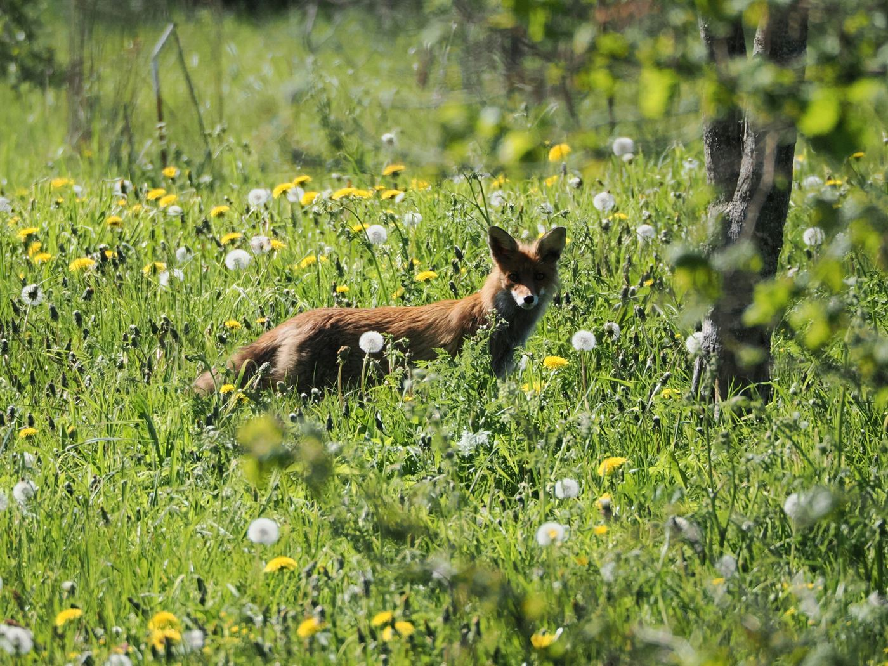

12. november
#nädalavahetus
Pühapäeva hommik, mis algas kell 11
Mul oli plaanis ärgata vara, teha pannkoogid ja olla produktiivne inimene. Tegelikult ärkasin kell 11, sõin külma pitsat ja vaatasin kaks tundi videoid sellest, kuidas teised inimesed pannkooke teevad. Täiesti korras pühapäev, kui minu käest küsida.

Õhtul tegin kokkuvõtte: nädal oli kiire, aga hea. Sain kaks raamatut lõpetatud, leidsin uue lemmikkohviku ja õppisin, et külm pitsa ei ole tegelikult nii hull, kui keegi arvab.
Loe edasi